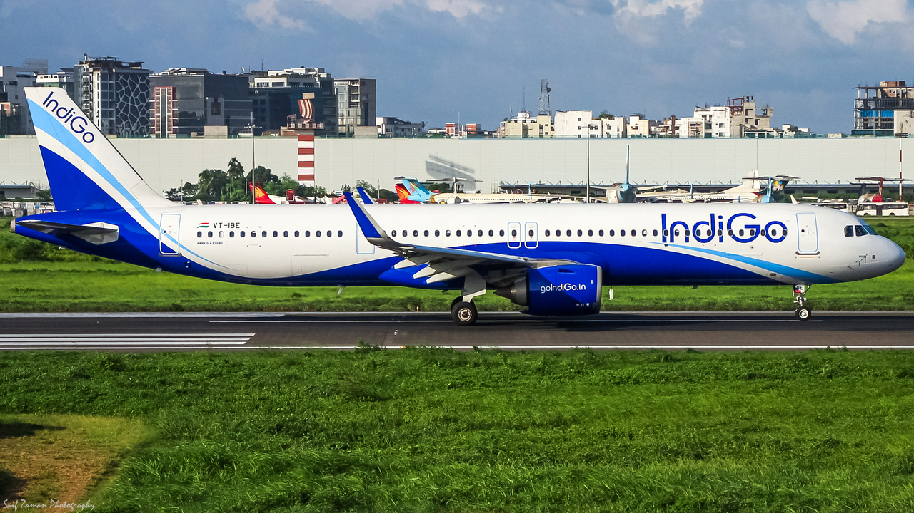
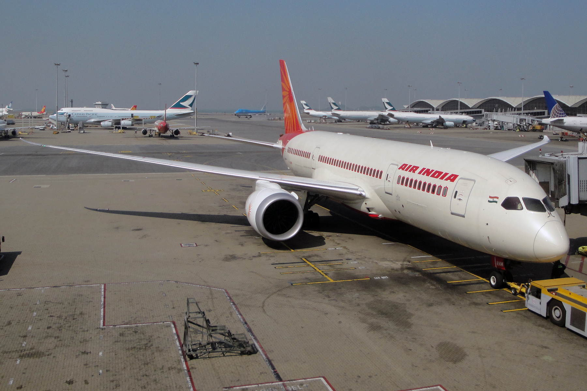
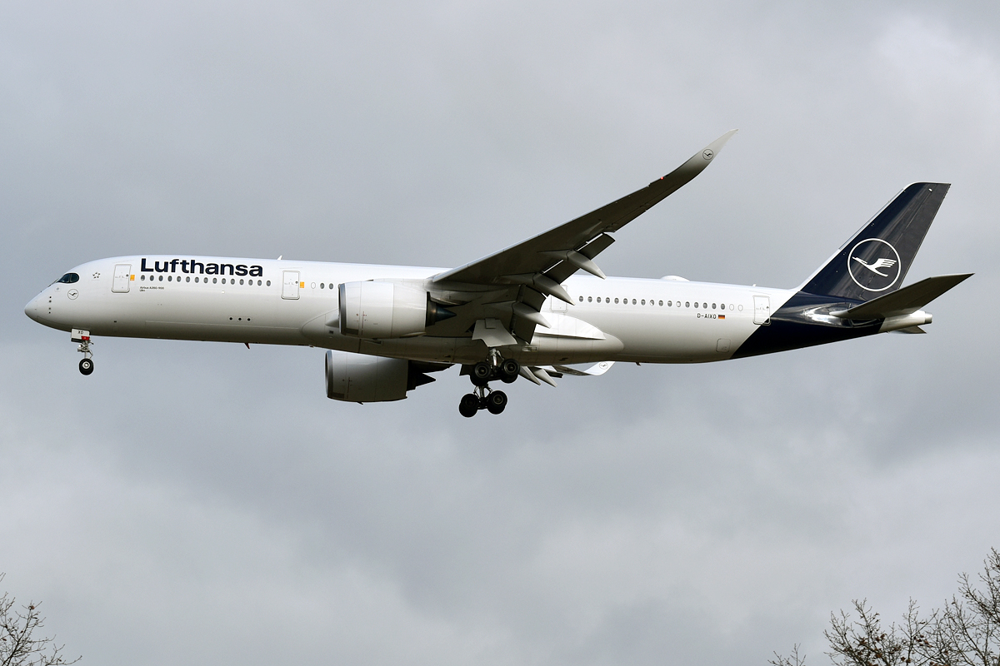

In this guide
There are really three ways to fly Europe to India: a direct flight on an Indian carrier (IndiGo or Air India), a one-stop flight on a European legacy carrier through their home hub (Lufthansa via Frankfurt/Munich, KLM via Amsterdam, Air France via Paris), or a budget routing through a Central Asian or Gulf hub, which is usually the cheapest option but adds real time and an extra layover. This is about the first two, since those are what most people flying from Amsterdam, Paris, Frankfurt, or Munich actually end up comparing.

Photo: Md Shaifuzzaman Ayon, CC BY-SA 4.0, Wikimedia CommonsIndiGo
IndiGo connects Amsterdam to Mumbai, not Delhi, so factor in a domestic leg if Delhi or further north is your real destination. As of now, that route is genuinely flying a widebody: a Boeing 787-9 wet-leased from Norse Atlantic Airways, tracked under Norse Atlantic's own ATC callsign (NBT22), not IndiGo's. But that arrangement has a shelf life, IndiGo confirmed in August 2026 it's winding the lease down, with its Delhi-London 787 service pausing from 25 October 2026 and widebody service not fully returning until its own A350s arrive in 2027. Some Europe routes may shift to the narrowbody A321XLR in the meantime, so check the aircraft type for your specific dates.
Budget for one more thing: meals are typically included, but a blanket, pillow, and eye shade are a separate paid add-on you pre-book, not handed out free like on the legacy carriers below.

Photo: Kambui, CC BY 2.0, Wikimedia CommonsAir India
Air India runs a true direct flight, no layover, no connection risk. The tradeoff for that directness shows up in the block time: ~10h 5m is noticeably longer than the roughly 8-8.5 hours a direct Amsterdam-Delhi routing would normally take at this distance (see the route diagram below for why).
The real catch is consistency, not the route. Multiple Tripadvisor reviews of this exact route describe broken or barely-functional entertainment screens and worn interiors on the older 787-8s in the fleet, while the newer 787-9s reportedly have sharp 4K screens. You don't get to pick which aircraft shows up, so treat working entertainment as a coin flip, not a guarantee.
Why the "direct" flight still takes 9-10 hours
Both IndiGo's Mumbai flight and Air India's Delhi flight fly the same real corridor, verified against live flight tracking, not a straight line over Iran and Pakistan, but a longer detour south through Egypt and the Gulf.
The dotted line (Dubai to Delhi) is Air India's final leg; the solid line is the shared corridor and IndiGo's route into Mumbai. Both avoid a shorter path directly over Iran and Pakistan.

Photo: Lufthansa/D-AIXO, CC BY-SA 2.0, Wikimedia CommonsLufthansa
Lufthansa also flies Munich to Delhi, Mumbai, Bengaluru, and Chennai, the widest India network of any European carrier, usually with a short connection through its home hub rather than a long layover. It's consistently the most expensive of the group, but the tradeoff is real: a notably shorter block time than Air India on a comparable route, a more predictable service standard, and none of the "which specific plane will I get" uncertainty. If your dates are flexible, fares are usually cheapest booked 2-4 months out.
KLM and Air France
KLM also serves Mumbai and Bengaluru from Amsterdam, and Air France flies Paris to the same three cities, both are Air India's actual codeshare/alliance partners on parts of this corridor. Neither is usually the cheapest option, but both sit in a reasonable middle ground: better aircraft consistency than Air India, without quite Lufthansa's price premium. If you're flying from Amsterdam specifically and want a one-stop option instead of IndiGo or Air India's direct flight, KLM is the natural comparison to check.
The Honest Verdict
- Cheapest option: IndiGo. Amsterdam-Mumbai is still flying a real Boeing 787-9 widebody as of now, that's confirmed on current flight history, not a narrowbody. The A321XLR shift is coming, but the exact timing on this specific route isn't confirmed yet, so don't assume you'll get a narrowbody. What you should assume: no free blanket or pillow, those are a paid add-on you pre-book separately, unlike the legacy carriers below.
- Want the shortest routing (direct, no layover) and can tolerate some unpredictability: Air India. Real chance of a tired cabin and a dead entertainment screen, balanced against saving a connection.
- Willing to pay more for consistency: Lufthansa. The most expensive of the three, and also the one with the least "which plane am I getting" anxiety.
- Want a middle ground with more route choice than IndiGo/Air India but less cost than Lufthansa: KLM or Air France, depending on whether Amsterdam or Paris works better for you.